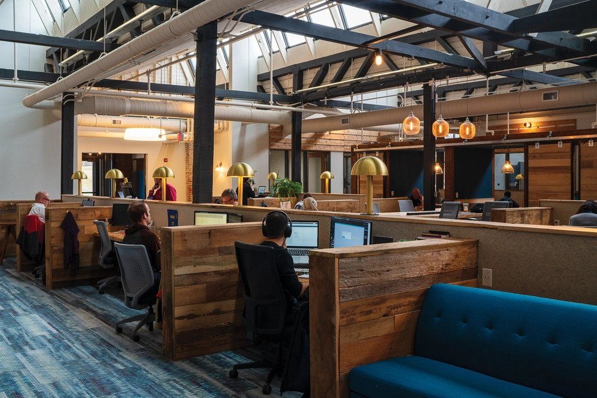

Image of The Mill from The Mill Website used without permission for this private project.
In September, I committed to participate in The Mill Code School. I didn't have extra time, but I did have extra motivation to learn and participate in a community.
I decided early on that an open mind and determination were skills I could bring to the table. Partnering with people who genuinely had my best interest in mind I watched over 50 hours of quality online learning modules and practiced using a variety of coding tools.
I knew at the start we'd be creating our own website, and I decided my topic would be gratitude. I kept my eye open for some content and snapped some pictures while taking in and considering each moment at the time.
The following pages are the ones I liked the best.